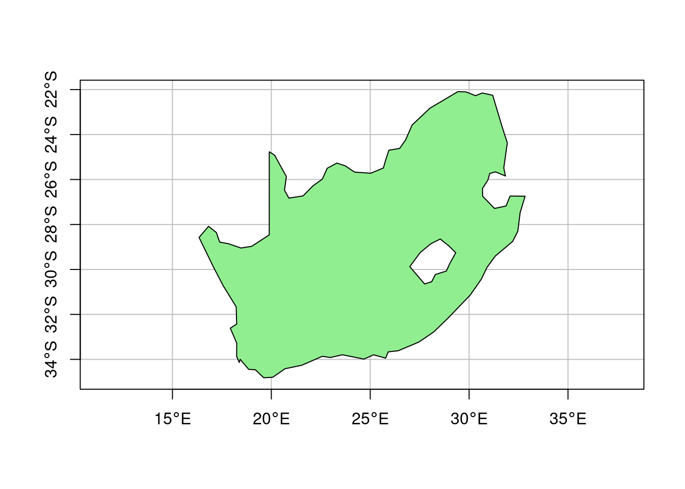
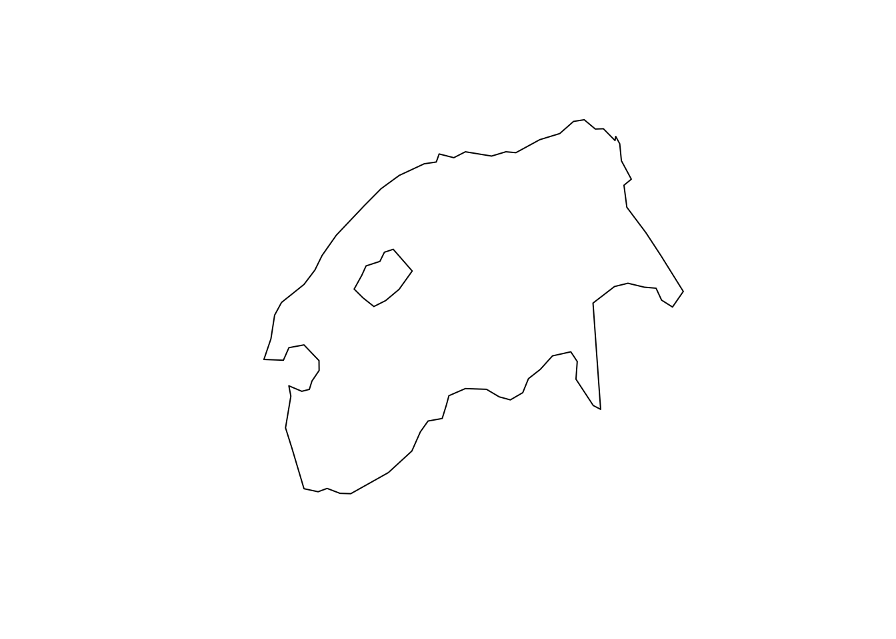
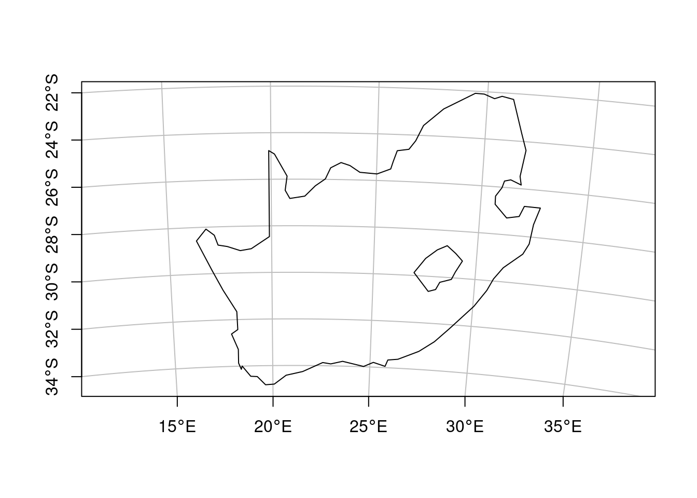

library(sf)Linking to GEOS 3.10.2, GDAL 3.4.3, PROJ 8.2.1; sf_use_s2() is TRUElibrary(dplyr)
Attaching package: 'dplyr'The following objects are masked from 'package:stats':
filter, lagThe following objects are masked from 'package:base':
intersect, setdiff, setequal, unionlibrary(rnaturalearth)
ne_countries(returnclass = "sf") |>
filter(admin == "South Africa") -> sa
plot(st_geometry(sa), graticule = TRUE, axes = TRUE, col = 'lightgreen')
st_geometry(sa) |> st_transform('EPSG:2053') |> plot() # .... uh?
sf_proj_pipelines('OGC:CRS84', 'EPSG:2053')Candidate coordinate operations found: 2
Strict containment: FALSE
Axis order auth compl: FALSE
Source: OGC:CRS84
Target: EPSG:2053
Best instantiable operation has accuracy: 1 m
Description: axis order change (2D) + Inverse of Hartebeesthoek94 to WGS 84
(1) + South African Survey Grid zone 29
Definition: +proj=pipeline +step +proj=unitconvert +xy_in=deg +xy_out=rad
+step +proj=tmerc +axis=wsu +lat_0=0 +lon_0=29
+k=1 +x_0=0 +y_0=0 +ellps=WGS84utm34s = st_crs('EPSG:22234')
st_geometry(sa) |> st_transform(utm34s) |> plot(graticule = TRUE, axes=TRUE)